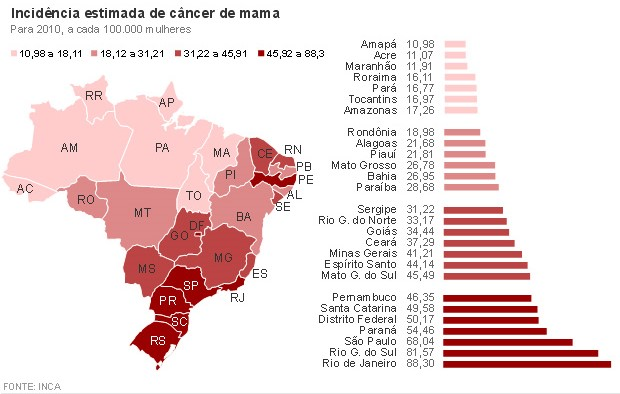

Outubro Rosa
Na década de 1990, nasce o movimento conhecido como Outubro Rosa, para estimular a participação da população no controle do câncer de mama. A data é celebrada anualmente, com o objetivo de compartilhar informações sobre o câncer de mama, promover a conscientização sobre a doença, proporcionar maior acesso aos serviços de diagnóstico e de tratamento e contribuir para a redução da mortalidade.
O primeiro vestígio da campanha Outubro Rosa em terras brasileiras foi no ano de 2002. O Mausoléu do Soldado Constitucionalista, também conhecido como Obelisco do Ibirapuera, localizado em São Paulo, ficou iluminado de rosa durante o mês.
Na terceira semana de maio de 2008, em comemoração ao dia das mães, foi iluminada de rosa a Fortaleza da Barra, em São Paulo, para lembrar às mulheres sobre a prevenção do câncer de mama.
Em outubro do mesmo ano, diversos locais tiveram os seus monumentos coloridos por uma luz rosa. Foi o caso, por exemplo, do símbolo mais conhecido do Rio de Janeiro: a estátua do Cristo Redentor.
Segundo dados do INCA (Instituto Nacional de Câncer), o câncer de mama é o segundo mais prevalente entre as mulheres e representa 28% dos casos de câncer por ano. Além disso, uma pesquisa realizada pelo IBGE, em 2012, mostrou que, em 20 anos, as mortes de mulheres pelo câncer de mama aumentou em 16,7%. Confira o mapa sobre a estimativa de câncer de mama nas regiões do Brasil:
